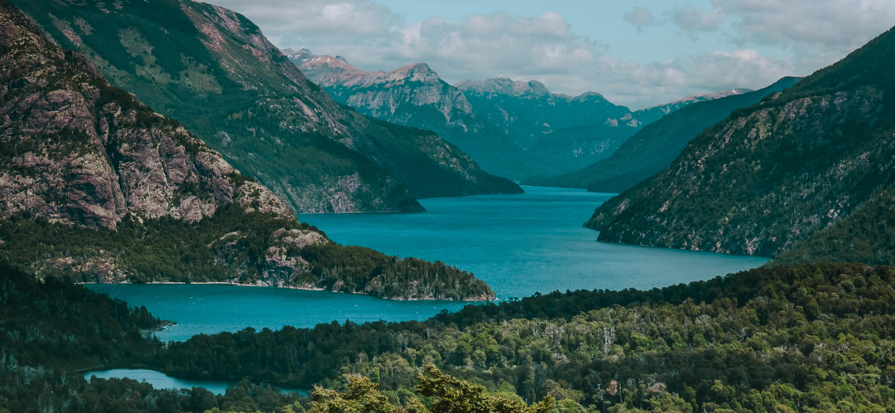
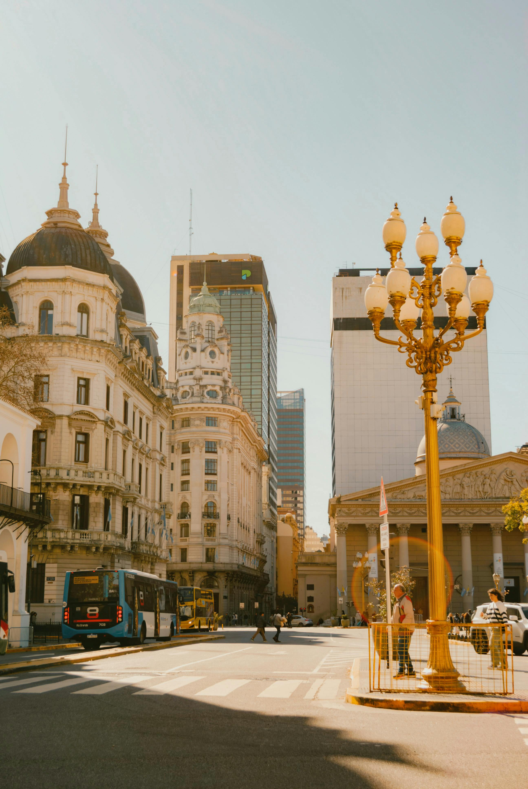
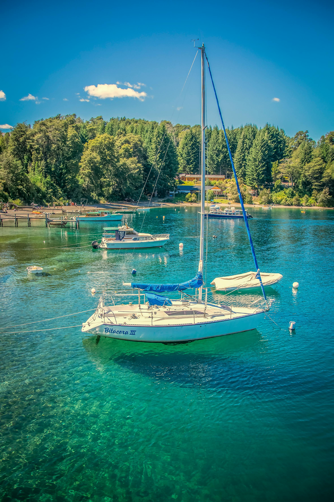

A capital da Argentina é o principal centro cultural, político e econômico do país. Conhecida por sua arquitetura de estilo europeu, a cidade mistura tradição e modernidade em bairros icônicos como San Telmo e La Boca. É famosa pela vida noturna agitada, restaurantes, cafés e apresentações de tango. Entre seus pontos turísticos mais visitados está o Obelisco de Buenos Aires, símbolo da cidade, além da Casa Rosada e da Avenida 9 de Julio, uma das mais largas do mundo.

El Calafate é uma pequena cidade localizada no sul da Argentina, sendo a principal porta de entrada para o Parque Nacional Los Glaciares. O grande destaque da região é o famoso glaciar Perito Moreno, uma enorme geleira que impressiona turistas com suas paredes de gelo e desprendimentos naturais. A cidade é ideal para quem busca contato direto com a natureza, oferecendo passeios de barco, trilhas e experiências únicas na Patagônia.
Localizada na região da Patagônia, Bariloche é um dos destinos mais procurados da Argentina, especialmente durante o inverno. A cidade é famosa por suas paisagens naturais, com montanhas cobertas de neve, lagos cristalinos e florestas. É um dos principais centros de esqui do país, atraindo turistas do mundo inteiro. No verão, oferece atividades como trilhas, passeios de barco e esportes ao ar livre. Além disso, é conhecida pela produção de chocolates artesanais.
